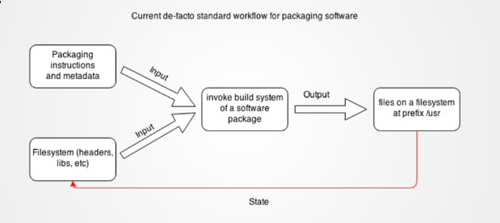
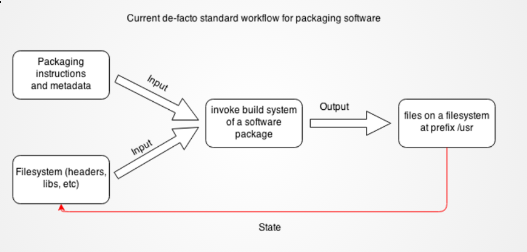
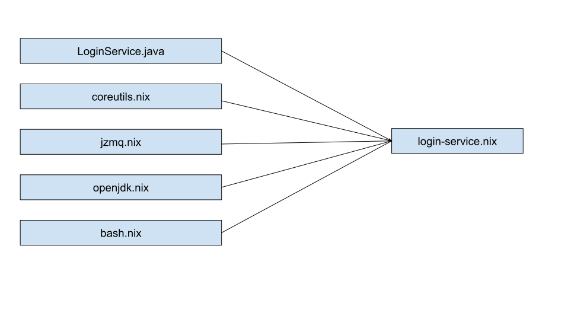
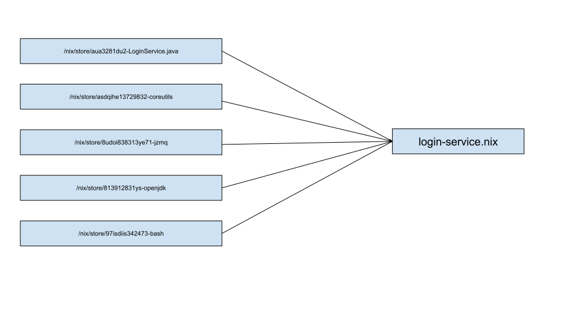
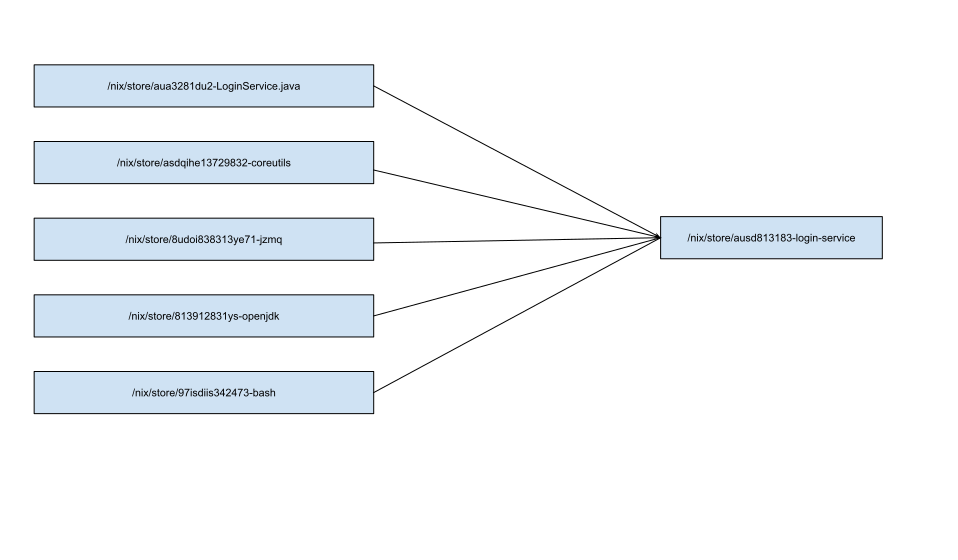
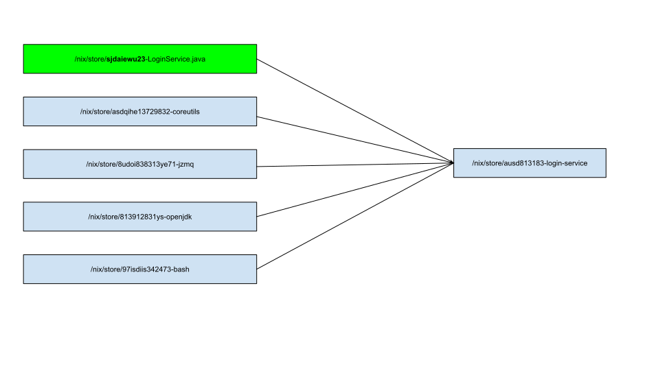
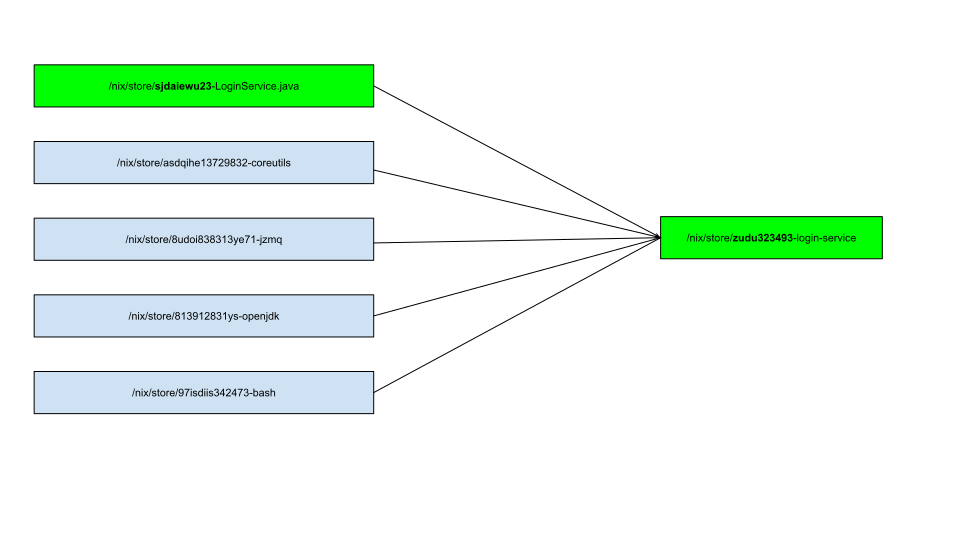
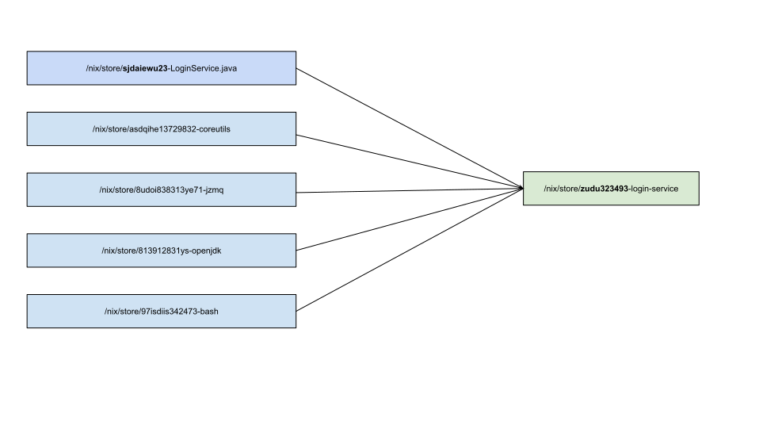
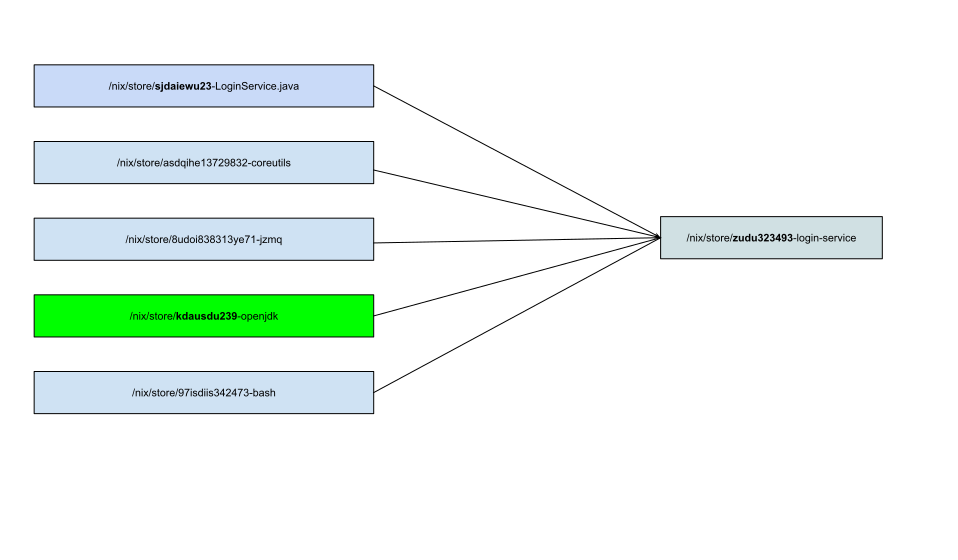
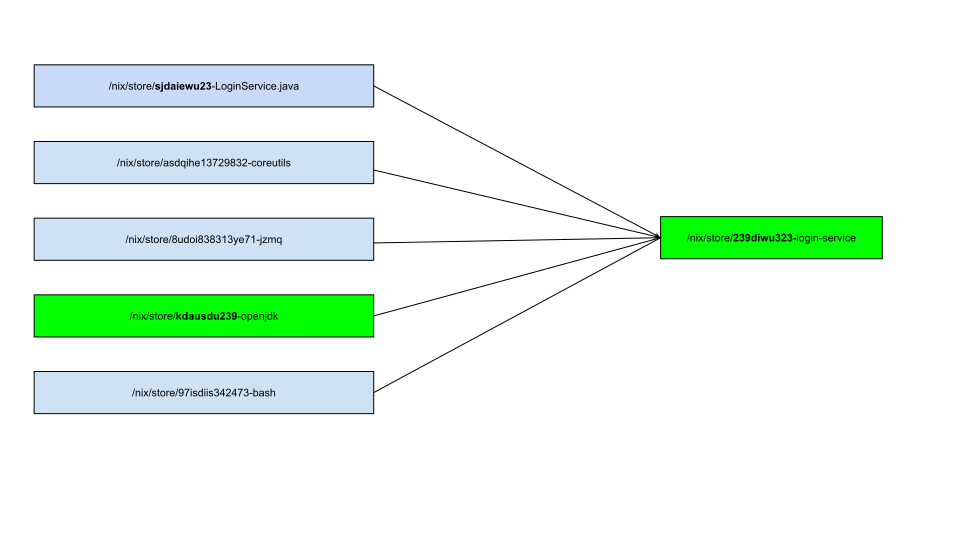

Nix Package manager
Arian van Putten
Assumptions about my audience
- Used a GNU/Linux based OS like Ubuntu before?
- If not, used Homebrew on Mac OS X before?
- Familiar with Git?
- Used Docker before? Hobby / Professional?
- Familiar with / Heard of Nix?
Build problems
A current state of affairs - (Raise hands if you had one of these issues!)
- I build a project but it doesn’t compile, whilst it did build on a collegues machine
- I modified some file like
/usr/lib/nginx/nginx.conf and now apt upgrade aborts, because it tries to override an existing file.
- I manually installed
node in /usr/bin/node, now apt installs it as a dependency, and apt fails because it tries to override existing file
- Computer runs out of battery during
apt upgrade, and now my whole system is F*$#kd
- My package manager has version X, but I need version Y
- Insert story from the audience here
Challenge
- Take a random commit from 5 years ago at your company
- Can you get the commit to build from scratch?
What is the root cause of all these issues?
What is the root cause of all these issues?
Mutability

/usr is a mutable directory/usr is an implicit build input to all your projects
What do we want?
- Reliable builds
- If it builds on my machine, it should build on any machine, always
- If I build it today, I should be able to build it in 10 years
- Isolation
- Multiple versions of the same software should be able to run next to each other
- Atomic updates
- You either install something completely, or you do not install it al all
Digression - Git
- We decided that people editing the same files in the same Dropbox / fileshare is bad
- I delete an file by accident, and now collegue wants it back
- Version Control Systems were invented
Digression - Git
In Git, do we all edit the same directory? No!
❯ git log --graph --decorate --all
* commit 24c1ad70db1890dcc2b3dbaaa5a151adedaec0b9 (HEAD)
| Author: Arian van Putten <aeroboy94@gmail.com>
| Date: Mon Jul 30 13:34:51 2018 +0200
|
| Implement feature C
|
* commit 1e63d01b43dcdab7636f6e49a8c116b42dd7af8f
| Author: Arian van Putten <aeroboy94@gmail.com>
| Date: Mon Jul 30 13:34:45 2018 +0200
|
| Implement feature A
|
* commit b5deb132c92bb39e99477432b62adea62dcca43c
Author: Arian van Putten <aeroboy94@gmail.com>
Date: Mon Jul 30 13:34:35 2018 +0200
Initial commit
Digression - Git
- Commits refer to content they contain
- Each commit uniquely identifies an immutable directory of files, stored in
.git/objects/<commit-id>
commit-id(Implement feature A) =
sha1(.
├── sha1(a)
├── sha1(b
│ └── sha1(b.html))
└── sha1(c
└── sha1(a.java))
$ tree ./git/objects/24c1ad70db1890dcc2b3dbaaa5a151adedaec0b9
./git/objects/24c1ad70db1890dcc2b3dbaaa5a151adedaec0b9
├── a
├── b
│ └── b.html
└── c
└── a.java
- Current version of our Repo (
HEAD) is just a symbollic link to such a commit
- Can move back and forth using
git checkout <commit>
P.S. I know I am lying a bit, but this is morally true
Digression - Git
We simply change to which commit HEAD points, to rollback
❯ git log --graph --decorate --all
* commit 24c1ad70db1890dcc2b3dbaaa5a151adedaec0b9 (HEAD)
| Author: Arian van Putten <aeroboy94@gmail.com>
| Date: Mon Jul 30 13:34:51 2018 +0200
|
| Implement feature C
|
* commit 1e63d01b43dcdab7636f6e49a8c116b42dd7af8f
| Author: Arian van Putten <aeroboy94@gmail.com>
| Date: Mon Jul 30 13:34:45 2018 +0200
|
| Implement feature A
|
* commit b5deb132c92bb39e99477432b62adea62dcca43c
Author: Arian van Putten <aeroboy94@gmail.com>
Date: Mon Jul 30 13:34:35 2018 +0200
Initial commit
git checkout 24c1ad
Digression - Git
We simply change to which commit HEAD points, to rollback
❯ git log --graph --decorate --all
* commit 24c1ad70db1890dcc2b3dbaaa5a151adedaec0b9
| Author: Arian van Putten <aeroboy94@gmail.com>
| Date: Mon Jul 30 13:34:51 2018 +0200
|
| Implement feature C
|
* commit 1e63d01b43dcdab7636f6e49a8c116b42dd7af8f (HEAD)
| Author: Arian van Putten <aeroboy94@gmail.com>
| Date: Mon Jul 30 13:34:45 2018 +0200
|
| Implement feature A
|
* commit b5deb132c92bb39e99477432b62adea62dcca43c
Author: Arian van Putten <aeroboy94@gmail.com>
Date: Mon Jul 30 13:34:35 2018 +0200
Initial commit
git checkout 1e63d0
Digression - Git
What problems does this method solve?
- A commit uniquely identifies the state of your source repository
- It will always do, because the repository is immutable
- We can easily rollback
- We are atomic: 2 users don’t edit the same directory, they each edit their own little world, identified by a commit hash
- You either observe a commit in its totality
- Or Not at all
- there is no “inbetween”
What do we want?
- Reliable builds
IsolationAtomic updates
Idea
Lets make package managers work like git!
Eelco Dolstra. The Purely Functional Software Deployment Model. PhD thesis, Faculty of Science, Utrecht, The Netherlands. January 2006. ISBN 90-393-4130-3.
https://nixos.org/~eelco/pubs/phd-thesis.pdf
Idea
Lets make package managers work like git!
PREFIX= sha1(sha1(deps(package)) + sha1(src(package)) + sha1(options(package))
$PREFIX/bin , $PREFIX/lib $PREFIX/share
instead of:
/usr/bin, /usr/lib/, /usr/share

- Dependencies change? => Installed in different prefix
- Source code change? => Installed in different prefix
- Build options change? => Installed in different prefix
Nix
- Package manager
- Declarative lanuage to describe package builds
- Isolated build environments
- Over 10000 packages and counting
- Mac OS X / Linux / BSD and Soon Windows Subsystem for Linux*
- Source-based package manager (Like Gentoo)
- But don’t worry; also has a build cache
|

|
DEMO TIME: Installing a package
- To install a package, we build it from source, given a package description
./nixpkgs.nix is a file containing build instructions for all packages
nix-build ./nixpkgs.nix -A nginx
tree /nix/store/i5h55rj3mhlad1vbp6rlwvacfafycl4p-nginx-1.14.0
sudo /nix/store/i5h55rj3mhlad1vbp6rlwvacfafycl4p-nginx-1.14.0/bin/nginx
curl http://localhost
- Observation: It was instant? It didn’t build anything from source?
- Not very user-friendly to type in the large /nix/store/bLAHBLAH/ when I want to run a program
nix-env
- Used to install software in $PATH
nix-env -f ./nixpkgs.nix -i -A nginx
sudo nginx
which nginx
tree /home/arian/.nix-profile
nix-env -f ./nixpkgs.nix -i -A hello
tree /home/arian/.nix-profile
nix-env --rollback
hello
nix-env --rollback
nginx
- Rollbacks possible?
- How?!
nix-env
Atomic updates and rollbacks
export PATH=/nix/var/nix/profiles/per-user/arian/profile
/nix/var/nix/profiles/per-user/arian
├── profile -> profile-1-link
│
├── profile-1-link -> /nix/store/7m5fi-user-environment
│ └── bin -> /nix/store/2gk7-nginx-2.0.1/bin
│
└── profile-2-link -> /nix/store/34hia-user-environment
└── bin
├── hello -> /nix/store/i5h55-hello-1.14.0/bin/hello
└── nginx -> /nix/store/2gk7-nginx-2.0.1/bin/nginx
- This is exactly the same as
HEAD in git!
nix-env
Atomic updates and rollbacks
export PATH=/nix/var/nix/profiles/per-user/arian/profile
/nix/var/nix/profiles/per-user/arian
├── profile -> profile-2-link
│
├── profile-1-link -> /nix/store/7m5fi-user-environment
│ └── bin -> /nix/store/2gk7-nginx-2.0.1/bin
│
└── profile-2-link -> /nix/store/34hia-user-environment
└── bin
├── hello -> /nix/store/i5h55-hello-1.14.0/bin/hello
└── nginx -> /nix/store/2gk7-nginx-2.0.1/bin/nginx
- This is exactly the same as
HEAD in git!
Important takeaways
- Each package is installed in its own unique path (think git commit hash)
- Software is installed into profiles, which are symlinks to packages (think
HEAD)
- You can rollback to previous profiles, by changing a symlink (think
git checkout)
- This allows for atomic updates, because symlink changes are atomic
- As an end user, not very different from
homebrew or apt, except for rollbacks
How does all this Black Magic work?

The Nix Language
- Language of Nixfiles, which describes how to build packages
- Think
Dockerfile or debinfo file
- Actually a proper programming language
- JSON-like with templating, functions and variables
- Side-effects only allowed but only if we know the output beforehand
The Nix Language in 1 minute
The derivation function
- derivation takes a build description
- Builds the project
- and returns where in /nix/store the project will installed
lol = derivation { name = "lol"; builder = "lol"; system = builtins.currentSystem; }
"${lol}"
"/nix/store/7kv2zhwjiyzlnfn0lv1fcyd0w8xzcd8r-lol"
The derivation function
- How does the derivation function decide where to install?
- Hash of all its inputs, like git a commit!
location = /nix/store/sha256({ name = sha256("lol"); builder = sha256("lol")}) + name;
= /nix/store/7kv2zhwjiyzlnfn0lv1fcyd0w8xzcd8r-lol
Graphical representation of our Derivation

Evaluated derivation

Evaluated derivation

If I update the source code

If I update the source code

…

If I update one of the dependencies …

If I update one of the dependencies …

So why a programming language?
- To build reusable constructs
- Comes with a large standard library of common build patterns
./nixpkgs.nix is a list of 10000+ packages the community already created https://github.com/nixos/nixpkgsstdenv is a derivation that will automatically detect your project’s build tool (make, cmake, autotools), and will generate that pesky builder.sh for us
So why a programming language?
How is a derivation built
- Source code is downloaded
- Code is checked against hash, otherwise abort
- A chroot (container) is setup, containing just the build dependencies and source
- No network access
- All environment variables are Cleared
- No access to
$HOME. No access to anything on disk..
- Time is set to 1970
- The package build can only depend directly on the dependencies specified, and NOTHING else
- The
builder argument is executed, and its output copied to the Nix store
How is a derivation built
- Now, if a collegue forgets to write down what libraries exactly you need to install
- … Or if uses library that is available by default on Ubuntu but not On Redhat
- … The build is guarenteed to fail
- We explicitly state the hash of sources we download from the internet
- If the internet changes, then the build fails. No implicit changes!
- Reliable builds
Reliable builds
- I am confident, that if I check out the Nix file of
nginx from a year ago, it will build
- It will build all old versions of dependencies from source, and then build
nginx from source
- Takes a long time. But it will work
cd nixpkgs-channels
git log
cat nginx.nix
nix-build nginx.nix
What do we want?
Reliable buildsIsolationAtomic updates- Not build everything from source? What the hell, Arian?
Build Cache
- Remember, our build instructions uniquely determine where we install the package
nix-repl> "${nginx}"
"/nix/store/i5h55rj3mhlad1vbp6rlwvacfafycl4p-nginx-1.14.0"
- We know beforehand where our build is going to be put!
- Simply ask if someone else already built it, and download it from there!
Build Cache
- Remember, our build instructions uniquely determine where we install the package
nix-repl> "${nginx}"
"/nix/store/i5h55rj3mhlad1vbp6rlwvacfafycl4p-nginx-1.14.0"
- We know beforehand where our build is going to be put!
- Simply ask if someone else already built it, and download it from there!
if file_exists("/nix/store/i5h55rj3mhlad1vbp6rlwvacfafycl4p-nginx-1.14.0") {
return;
} else if download("https://cache.nixos.org/nix/store/i5h55rj3mhlad1vbp6rlwvacfafycl4p-nginx-1.14.0") {
return;
} else {
build(pkg);
}
Build Cache
- Can also be used privately, for company-internal packages
nix build --store https://cache.nixos.org (Default)nix build --store s3://my-company-bucketnix build --store ssh://collegue-machinenix build --store file:///nfs/company-fileshare/- BuildCache As A Service : https://cachix.org/
- If a collegue already built some project
- … and you checkout the same git commit
- Then you don’t have to rebuild everything! You just download it from the cache!
Continious integration script
How about docker?

Just put it in a damn container - Lucas
Docker?
FROM ubuntu:xenial
RUN apt update -y && \
apt upgrade -y && \
apt install python3 \
python3-pip \
mysql-client \
liblapack-dev && \
pip3 install scipy \
Flask \
sqlalchemy
COPY . /app
WORKDIR /app
ENTRYPOINT ["python3"]
EXPOSE 8080
CMD ["app.py"]
|
- Atomic
- Isolated
- But reliable?
- Does xenial still exist?
- What version packages do I get if I run “upgrade?”
- What libs are installed by default on xenial?
Challenge
- Can you take a random commit + Dockerfile from 5 years ago at your company and build your project?
|
Solution? Docker
- Docker is an ubiquitos distribution format.
- Once it builds.. send it to the registry
- Solves the “runs on my machine” problem
- Does not solve the “builds on my machine” problem
|

|
Best of both worlds
- Nix has support for building docker containers
- Copies your package + all its dependencies in a docker image
- Bare image, no
FROM blah
- Super small
- You can easily integrate Nix in existing docker-compose or Kubernetes projects!
|
|
Downsides of Nix
- Steep learning curve. Thinking functionally is something to get used to
- You Can not do dirty hacks. You can’t go monkeypatch some python package in
/usr/lib/python, or update /etc/hosts manually
- Ok.. maybe the above is a Pro. But it forces you to do things properly. Which might be slow
- Install can get large, as multiple people have multiple versions of packages
- Documentation is … not always great. “Read the source code” is a common philosophy among Nix’ers
- However, this forces you to actually learn the tool, and gives great flexibility to you
Recap
- Nix is a package manager
- Packages are immutable
- builds are isolated
- … are atomic
- … are reliable
- Easily share build environments with collegues
- Thousands of build environments available
- Is not docker, but works well with docker!
Bonus: Hey did that nginx thingy compile?